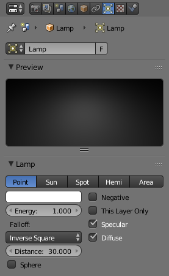

灯光面板¶

灯光选项卡。¶
- 灯光
数据块菜单。它的列表显示当前场景中使用的所有灯光设置。
- 纹理数量
显示灯纹理堆栈中的纹理数量。
预览¶
快速预览灯光设置。
灯光¶
- 类型
Types of lamps 可在Blender Internal中找到。它们共享此处列出的所有或部分选项：
- 颜色
光源照明的颜色。
- 能量
光源的照度（从0.0到10.0）。
- 距离
距离 数字按钮表示当前光源强度将是Blender 单位（bu）其强度一半的数量。距离灯不到bu的物体会得到更多的光，而距离远一些的物体会得到更少的光。某些设置和灯衰减类型会影响*距离*的解释方式，这意味着它不会总是做出相同的反应.
Sun 和 Hemi 灯是另一类使用恒定衰减的灯。这些灯没有 Distance(距离) 参数，通常称为“基础照明灯”。
影响¶
每盏灯都有一组开关，用于控制哪些物体接收光线，以及它与材质的相互作用。
- 负
让灯投射负光。灯所产生的光从它所照射的表面的辐照度中 减去，这使这些表面变暗而不是使它们变亮。
- 仅此图层
灯光仅照亮灯所在的同一层上的物体。使灯仅照亮同一层上的物体。
- 高光
灯会产生高光。
- 漫反射
灯会影响漫反射阴影。